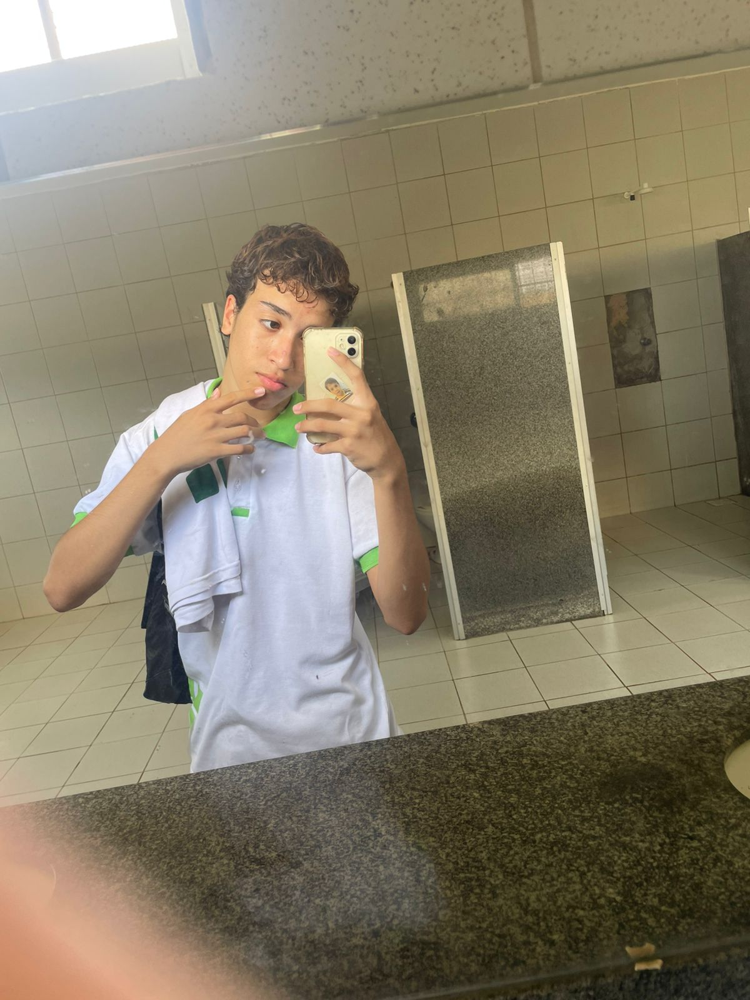
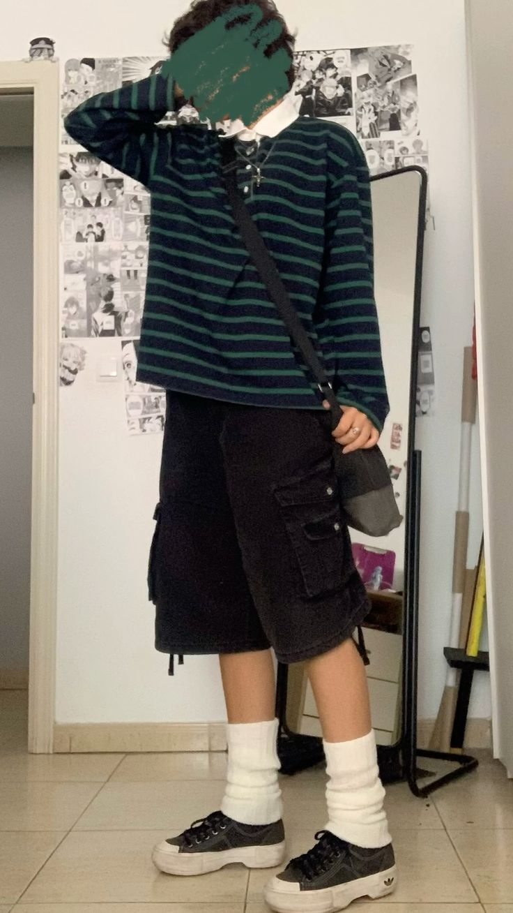

Seção 1
Aparência

Minha aparência: Um Jovem de 16 anos de cabelos encaracolados, pele clara, aparentemente tem 1,68 e tem leves sardas no rosto
Seção 2
Estilo

Meu estilo: Gosto de um estilo meio nerd e básico, combinando com minhas caractéristicas e gostos tanto musicais como cinematógrafo, uma curiosidade é que escolhi Informática por ele se englobar no meu mundo nerd!
Seção 3
Gosto musical

Sobre a Playlist: Meu gosto varia muito, eu gosto muito de música gospel, MPB, músicas internacionais